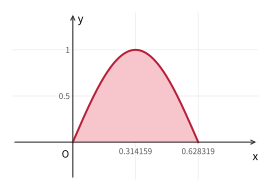
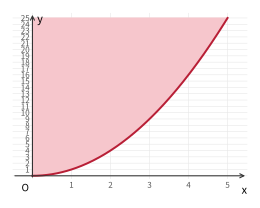

別冊章末問題の解答
1. 定積分 \(\displaystyle\int_0^1 5x(x^2+1)^{4}dx\) の値を求めよ。
置換する文字を決める
\(u=x^2+1\) とおく。両辺を \(x\) で微分する。
\[\dfrac{du}{dx}=2x\ \Rightarrow\ du=2x\,dx\ \Rightarrow\ x\,dx=\dfrac12du\]積分範囲を \(u\) に対応させる
\(u=x^2+1\) に端の値を代入する。
| \(x\) | \(0\) | \(1\) |
|---|---|---|
| \(u\) | \(0^2+1=1\) | \(1^2+1=2\) |
\(u\) の式に書きかえる
\[\int_0^1 5x(x^2+1)^{4}dx=5\int_0^1(x^2+1)^{4}\cdot x\,dx\]
\(x^2+1=u,\ x\,dx=\dfrac12du\) を入れる。
\[=5\int_{1}^{2}u^{4}\cdot\dfrac12du=\dfrac{5}{2}\int_{1}^{2}u^{4}du\]\(u\) で積分する
\(\int u^ndu=\dfrac{u^{n+1}}{n+1}\) を使う。
\[=\dfrac{5}{2}\left[\dfrac{u^{5}}{5}\right]_{1}^{2}\]上端・下端を代入
（上端の値）\(-\)（下端の値）。
\[=\dfrac{5}{2}\left\{\dfrac{2^{5}}{5}-\dfrac{1^{5}}{5}\right\}=\dfrac{5}{10}\left(2^{5}-1^{5}\right)\]数値を計算する
\[2^{5}=32,\qquad 1^{5}=1\]\[=\dfrac{5}{10}\left(32-1\right)=\dfrac{5}{10}\cdot31=\dfrac{31}{2}\]
（例題1の型）
【答案】
\[\dfrac{31}{2}\]答
2. 定積分 \(\displaystyle\int_1^e x^{6}\log x\,dx\) の値を求めよ。
部分積分の形にする
\(\int fg'\,dx=fg-\int f'g\,dx\) で、微分して簡単になる \(\log x\) を \(f\) にとる。
\[f=\log x,\ f'=\dfrac1x,\qquad g'=x^{6},\ g=\dfrac{x^{7}}{7}\]公式に当てはめる
\[\int x^{6}\log x\,dx=\dfrac{x^{7}}{7}\log x-\int\dfrac1x\cdot\dfrac{x^{7}}{7}dx\]残りの積分を計算する
\(\dfrac1x\cdot x^{7}=x^{6}\) なので、
\[\int\dfrac1x\cdot\dfrac{x^{7}}{7}dx=\dfrac1{7}\int x^{6}dx=\dfrac1{7}\cdot\dfrac{x^{7}}{7}=\dfrac{x^{7}}{49}\]\[\int x^{6}\log x\,dx=\dfrac{x^{7}}{7}\log x-\dfrac{x^{7}}{49}\]上端 \(x=e\) を代入
\(\log e=1\)。
\[\dfrac{e^{7}}{7}\cdot1-\dfrac{e^{7}}{49}=e^{7}\left(\dfrac1{7}-\dfrac1{49}\right)=\dfrac{6\,e^{7}}{49}\]下端 \(x=1\) を代入
\(\log1=0\)、\(1^{7}=1\)。
\[\dfrac{1^{7}}{7}\cdot0-\dfrac{1^{7}}{49}=-\dfrac1{49}\]（上端）\(-\)（下端）
\[\dfrac{6\,e^{7}}{49}-\left(-\dfrac1{49}\right)=\dfrac{6\,e^{7}+1}{49}\]（例題2の型）
【答案】
\[\dfrac{6\,e^{7}+1}{49}\]答
3. 2曲線 \(y=e^x,\ y=e^{-x}\) と直線 \(x=\dfrac{5}{2}\) で囲まれた部分の面積を求めよ。
交点と上下を確認
\(e^x=e^{-x}\) とすると \(e^{2x}=1\) より \(x=0\)。\(0\leqq x\leqq \dfrac{5}{2}\) では \(e^x\geqq e^{-x}\)（上が \(e^x\)、下が \(e^{-x}\)）。

面積の式を立てる
（上）\(-\)（下）を \(x=0\) から \(x=\dfrac{5}{2}\) まで積分する。
\[S=\int_0^{\dfrac{5}{2}}\left(e^x-e^{-x}\right)dx\]原始関数を求める
\(\int e^xdx=e^x\)、\(\int e^{-x}dx=-e^{-x}\)（\((e^{-x})'=-e^{-x}\) だから）。
\[\int\left(e^x-e^{-x}\right)dx=e^x-\left(-e^{-x}\right)=e^x+e^{-x}\]上端 \(x=\dfrac{5}{2}\) を代入
\[e^{\dfrac{5}{2}}+e^{-\dfrac{5}{2}}\]下端 \(x=0\) を代入
\(e^0=1\)。
\[e^0+e^0=1+1=2\]（上端）\(-\)（下端）
\[S=\left(e^{\dfrac{5}{2}}+e^{- \dfrac{5}{2}}\right)-2=e^{\dfrac{5}{2}}+e^{- \dfrac{5}{2}}-2\]（例題3の型）
【答案】
\[e^{\dfrac{5}{2}}+e^{- \dfrac{5}{2}}-2\]答
4. 曲線 \(y=\log x\)、\(x\) 軸、直線 \(x=e^{6}\) で囲まれた部分の面積を求めよ。
正負を確認する
\(1\leqq x\leqq e^{6}\) では \(\log x\geqq0\)（\(\log1=0\)、増加）。グラフは \(x\) 軸の上側。

面積の式を立てる
\[S=\int_1^{e^{6}}\log x\,dx\]原始関数を求める（部分積分）
\(\log x=\log x\) とみて、\(f=\log x,\ g'=1\) とおく。
\[f'=\dfrac1x,\ g=x\]\[\int\log x\,dx=x\log x-\int\dfrac1x\cdot x\,dx=x\log x-\int1\,dx=x\log x-x\]上端 \(x=e^{6}\) を代入
\(\log e^{6}=6\)。
\[e^{6}\log e^{6}-e^{6}=6e^{6}-e^{6}\]下端 \(x=1\) を代入
\[\log1-1=0-1=-1\]（上端）\(-\)（下端）
\[S=\left(6e^{6}-e^{6}\right)-(-1)=(5)e^{6}+1\]（例題4の型）
【答案】
\[(5)e^{6}+1\]答
5. 曲線 \(y=e^{4x}\ (0\leqq x\leqq1)\) と \(x\) 軸、\(y\) 軸、直線 \(x=1\) で囲まれた部分を \(x\) 軸のまわりに回転してできる立体の体積を求めよ。
体積の公式
\(x\) 軸のまわりの回転体は、断面が半径 \(y\) の円板。
\[V=\pi\int_a^b\{f(x)\}^2dx\]被積分関数を計算する
\[\left(e^{4x}\right)^2=e^{4x\cdot2}=e^{8x}\]\[V=\pi\int_0^1e^{8x}dx\]
原始関数を求める
\(\left(e^{8x}\right)'=8e^{8x}\) だから、
\[\int e^{8x}dx=\dfrac{e^{8x}}{8}\]上端 \(x=1\) を代入
\[\dfrac{e^{8}}{8}\]下端 \(x=0\) を代入
\(e^0=1\)。
\[\dfrac{e^{0}}{8}=\dfrac1{8}\]（上端）\(-\)（下端）
\[V=\pi\left(\dfrac{e^{8}}{8}-\dfrac1{8}\right)=\dfrac{\pi\left(e^{8}-1\right)}{8}\]（例題5の型）
【答案】
\[\dfrac{\pi\left(e^{8}-1\right)}{8}\]答
6. \(0\leqq x\leqq\pi\) で、曲線 \(y=\sin x\) と \(y=\dfrac{1}{4}\sin x\) で囲まれる図形の面積を求めよ。
上下を確認する
\(0\leqq x\leqq\pi\) では \(\sin x\geqq0\) で、\(\dfrac{1}{4}<1\) だから \(\sin x\geqq\dfrac{1}{4}\sin x\)。上が \(y=\sin x\)。

面積の式を立てる
\[S=\int_0^{\pi}\left(\sin x-\dfrac{1}{4}\sin x\right)dx\]
\(\sin x\) でくくる。
\[=\int_0^{\pi}(1-\dfrac{1}{4})\sin x\,dx=\dfrac{3}{4}\int_0^{\pi}\sin x\,dx\]原始関数を求める
\(\int\sin x\,dx=-\cos x\)。
\[\dfrac{3}{4}\left[-\cos x\right]_0^{\pi}\]端の値を代入する
\(\cos\pi=-1,\ \cos0=1\)。
\[\left[-\cos x\right]_0^{\pi}=(-\cos\pi)-(-\cos0)=1-(-1)=2\]計算する
\[S=\dfrac{3}{4}\cdot2=\dfrac{3}{2}\]（例題6の型）
【答案】
\[\dfrac{3}{2}\]答
7. 曲線 \(y=\sin 5x\ \left(0\leqq x\leqq\dfrac\pi{5}\right)\) と \(x\) 軸で囲まれた図形を \(x\) 軸のまわりに1回転してできる立体の体積を求めよ。
体積の公式
\(x\) 軸のまわりの回転体は、断面が半径 \(y\) の円板。
\[V=\pi\int_0^{\dfrac\pi{5}}y^2dx=\pi\int_0^{\dfrac\pi{5}}\sin^25x\,dx\]
半角の公式で次数を下げる
\(\sin^2\theta=\dfrac{1-\cos2\theta}{2}\) で \(\theta=5x\) とする。
\[\sin^25x=\dfrac{1-\cos 10x}{2}\]\[V=\pi\int_0^{\dfrac\pi{5}}\dfrac{1-\cos 10x}{2}dx=\dfrac\pi2\int_0^{\dfrac\pi{5}}(1-\cos 10x)\,dx\]原始関数を求める
\(\int1\,dx=x\)、\(\int\cos 10x\,dx=\dfrac{\sin 10x}{10}\)（\((\sin 10x)'=10\cos 10x\) だから）。
\[\dfrac\pi2\left[x-\dfrac{\sin 10x}{10}\right]_0^{\dfrac\pi{5}}\]端の値を代入する
\(\sin2\pi=0\)、\(\sin0=0\)。
\[\left[x-\dfrac{\sin 10x}{10}\right]_0^{\dfrac\pi{5}}=\left(\dfrac\pi{5}-\dfrac{\sin2\pi}{10}\right)-\left(0-\dfrac{\sin0}{10}\right)=\dfrac\pi{5}\]計算する
\[V=\dfrac\pi2\cdot\dfrac\pi{5}=\dfrac{\pi^{2}}{10}\]（例題7の型）
【答案】
\[\dfrac{\pi^{2}}{10}\]答
8. 曲線 \(y=x^2\ (0\leqq x\leqq5)\) と直線 \(y=25\)、\(y\) 軸で囲まれた図形を \(y\) 軸のまわりに1回転してできる立体の体積を求めよ。
断面を考える
\(y\) を決めたときの断面は、半径 \(x\) の円板。\(y=x^2\) より \(x^2=y\)。

体積の式を立てる
\(y\) の範囲は \(0\) から \(25\) まで。
\[V=\pi\int_0^{25}x^2\,dy=\pi\int_0^{25}y\,dy\]原始関数を求める
\[\int y\,dy=\dfrac{y^2}{2}\]\[V=\pi\left[\dfrac{y^2}{2}\right]_0^{25}\]端の値を代入する
\[\pi\left(\dfrac{25^2}{2}-\dfrac{0^2}{2}\right)=\pi\cdot\dfrac{625}{2}=\dfrac{625 \pi}{2}\]（例題8の型）
【答案】
\[\dfrac{625 \pi}{2}\]答
9. 曲線 \(y=\dfrac{e^{5x}+e^{-5x}}{10}\ (0\leqq x\leqq1)\) の長さを求めよ。
導関数を求める
\((e^{5x})'=5e^{5x},\ (e^{-5x})'=-5e^{-5x}\)。
\[y'=\dfrac{5\left(e^{5x}-e^{-5x}\right)}{10}=\dfrac{e^{5x}-e^{-5x}}{2}\]\(1+y'^2\) を計算する
\[y'^2=\dfrac{\left(e^{5x}\right)^2-2e^{5x}e^{-5x}+\left(e^{-5x}\right)^2}{4}=\dfrac{e^{10x}-2+e^{-10x}}{4}\]\[1+y'^2=\dfrac{4+e^{10x}-2+e^{-10x}}{4}=\dfrac{e^{10x}+2+e^{-10x}}{4}=\left(\dfrac{e^{5x}+e^{-5x}}{2}\right)^2\]
根号をはずす
\(e^{5x}+e^{-5x}>0\) だから、
\[\sqrt{1+y'^2}=\dfrac{e^{5x}+e^{-5x}}{2}\]曲線の長さの式を立てる
\[L=\int_0^1\sqrt{1+y'^2}\,dx=\int_0^1\dfrac{e^{5x}+e^{-5x}}{2}dx\]原始関数を求める
\(\int e^{5x}\,dx=\dfrac{e^{5x}}{5}\)、\(\int e^{-5x}\,dx=-\dfrac{e^{-5x}}{5}\)。
\[\dfrac12\left[\dfrac{e^{5x}}{5}-\dfrac{e^{-5x}}{5}\right]_0^1\]端の値を代入する
\(e^0=1\)、上端と下端の差をとる。
\[L=\dfrac12\left\{\dfrac{e^{5}-e^{-5}}{5}-\dfrac{1-1}{5}\right\}=\dfrac{e^{5}-e^{-5}}{10}\]（例題9の型）
【答案】
\[\dfrac{e^{5}-e^{-5}}{10}\]答
10. サイクロイド \(x=5(t-\sin t),\ y=5(1-\cos t)\ (0\leqq t\leqq2\pi)\) と \(x\) 軸で囲まれた図形の面積を求めよ。
\(dx\) を \(t\) で表す
\(\dfrac{dx}{dt}=5(1-\cos t)\)。
\[dx=5(1-\cos t)\,dt\]\(t:0\to2\pi\) のとき \(x:0\to10\pi\)。

面積の式を立てる
\[S=\int y\,dx=\int_0^{2\pi}5(1-\cos t)\cdot5(1-\cos t)\,dt=25\int_0^{2\pi}(1-\cos t)^2dt\]展開する
\[(1-\cos t)^2=1-2\cos t+\cos^2t\]
\(\cos^2t=\dfrac{1+\cos2t}{2}\) で次数を下げる。
\[=1-2\cos t+\dfrac{1+\cos2t}{2}=\dfrac32-2\cos t+\dfrac{\cos2t}{2}\]原始関数を求める
\[\int\left(\dfrac32-2\cos t+\dfrac{\cos2t}{2}\right)dt=\dfrac32t-2\sin t+\dfrac{\sin2t}{4}\]端の値を代入する
\(\sin2\pi=\sin0=0\) だから、\(\sin\) の項は消える。
\[\left[\dfrac32t-2\sin t+\dfrac{\sin2t}{4}\right]_0^{2\pi}=\dfrac32\cdot2\pi-0=3\pi\]係数をかける
\[S=25\cdot3\pi=75 \pi\]（例題10の型）
【答案】
\[75 \pi\]答